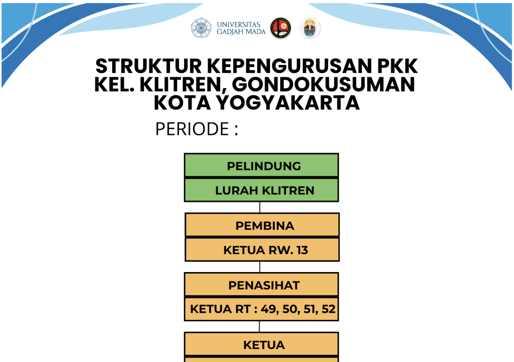
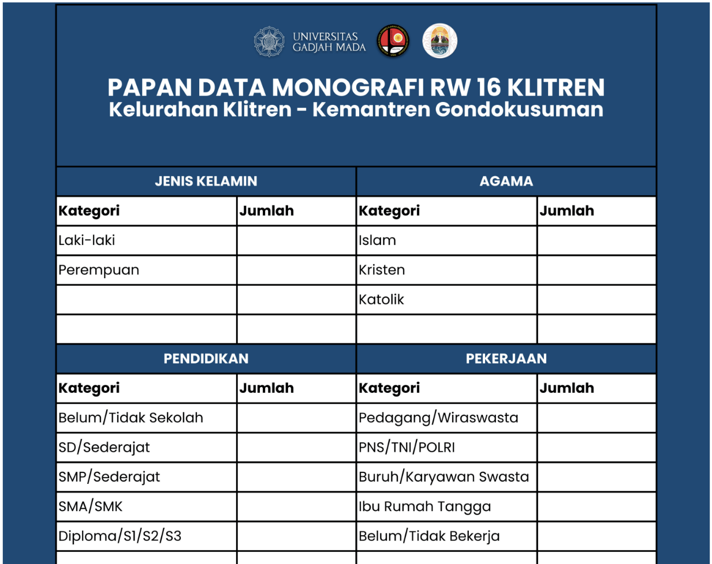
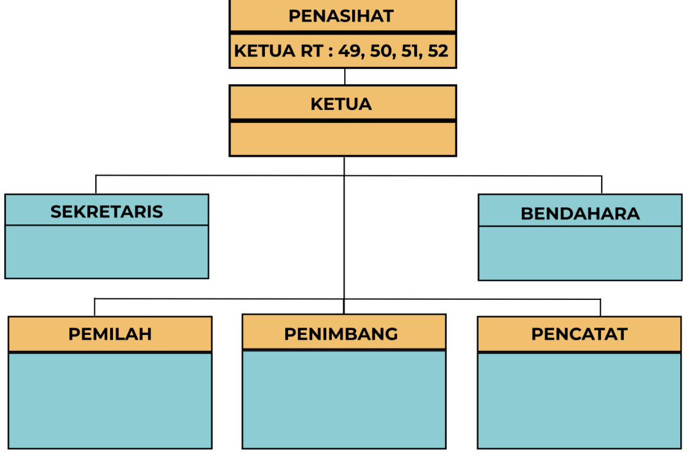
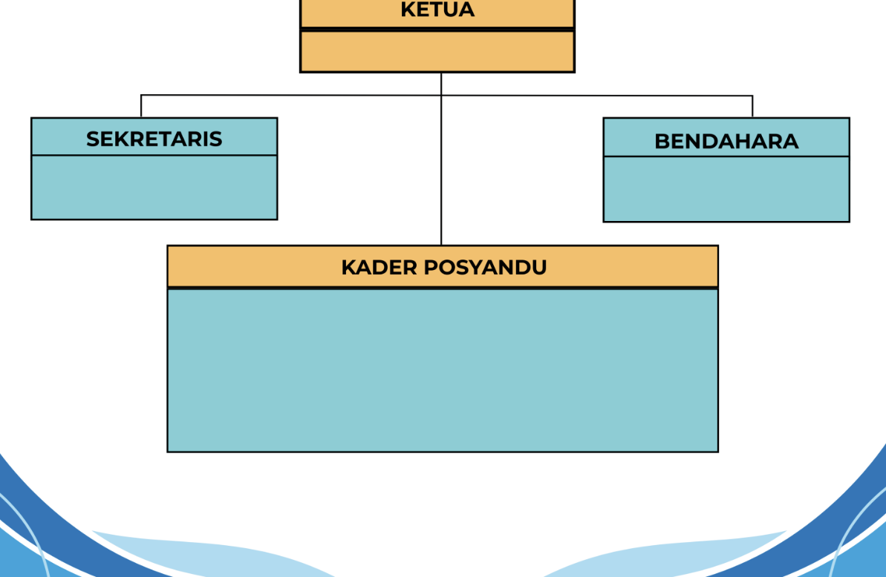

Beranda / Program dan Materi / Papan Struktur Kepengurusan & Monografi
Papan Struktur Kepengurusan & Monografi
dashboard
Template
Tentang Program
Program ini menyediakan papan informasi yang memuat struktur kepengurusan RW serta data monografi wilayah sebagai media informasi bagi masyarakat. Papan dirancang agar mudah diperbarui secara mandiri oleh pengurus sehingga informasi yang ditampilkan dapat selalu relevan, sekaligus meningkatkan transparansi dan memudahkan warga dalam mengakses informasi mengenai organisasi serta kondisi wilayah RW.

open_in_new
Akses Template
Gunakan template ini untuk membuat papan struktur kepengurusan Anda sendiri.
Buka TemplateDokumentasi Implementasi



